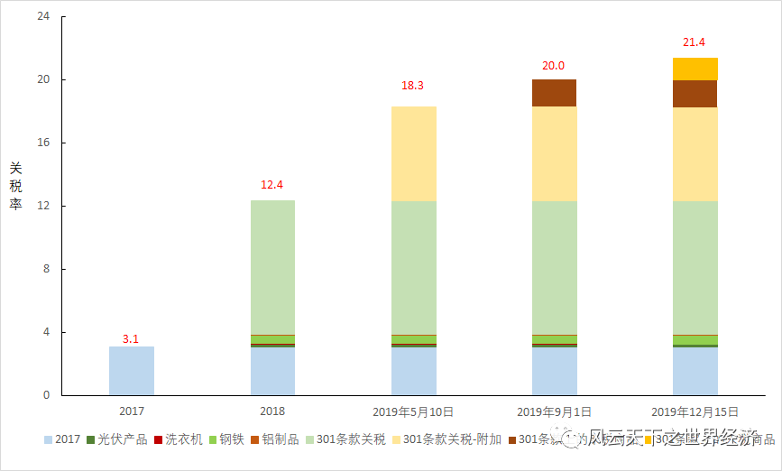
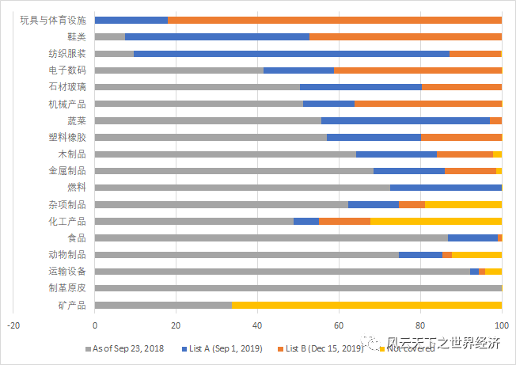
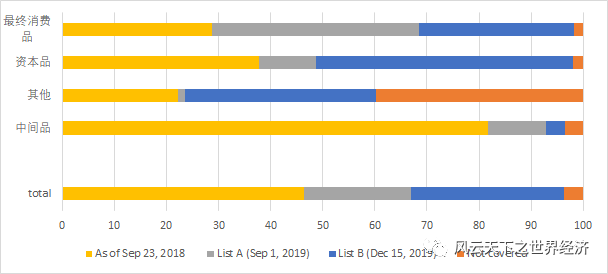
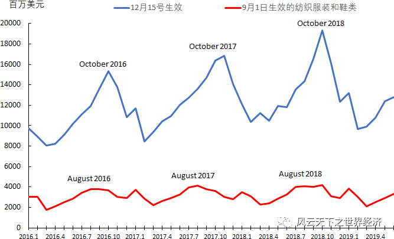
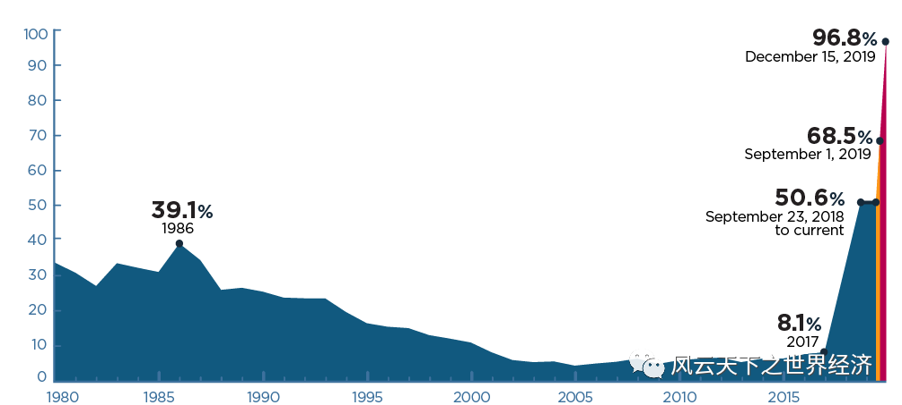

Abstract
在不到两年的时间里，特朗普将把美国对中国进口商品的平均关税从贸易战前的3.1%提高了 18个百分点；关税将于9月1日首次直接影响许多消费品；从12月15日开始，从中国进口的几乎所有产品类别都将成为特朗普加征关税的目标;两个加税时间节点的设计刻意避开了美国的消费旺季；3000亿美元清单中仅有约20亿美元产品 (包括圣经、儿童安全座椅和鳕鱼) 不会受到新关税的影响。
北京时间2018年7月6日12:01，第一批以中美贸易战为名的关税落到中国输美商品上。这一波贸易战的波及范围包括818个类别，价值340亿美元，关税率25%。
中方迅速做出反制，于同日对同等规模的美国产品加征25%的进口关税。
中美贸易战的硝烟自此腾空而起。
此后，这个Topic就长期霸占各大财经媒体的头条，成为年度话题。在过去的一年多的时间里，贸易战打打停停。蔽去中美双方的口水，需要盘点还有几个时间节点:
2018年8月23日起美国对从中国进口的约160亿美元商品加征25%的关税。
中方为做出必要反制，决定对160亿美元自美进口产品加征25%的关税，并与美方同步实施。
特朗普总统所承诺的500亿当量，在这一天终于凑够。
2018年9月18日，美国政府宣布实施对从中国进口的约2000亿美元商品加征关税的措施，自2018年9月24日起加征关税税率为10%，2019年1月1日起加征关税税率提高到 25%。
中方对已公布的约600亿美元清单商品实施加征关税措施。
2019 年 5 月 10 日，美方已将对 2000 亿美元中国输美商品加征的关税从 10% 上调至 25%。
作为应对，自2019年6月1日0时起，中方对已实施加征关税的600亿美元清单美国商品中的部分，提高加征关税税率，分别实施25%、20%或10%加征关税。对之前加征5%关税的税目商品，仍继续加征5%关税。
至此，中美贸易战达到了史无前例的2000亿当量级。美方接下来要瞄准的中美贸易总额中remaining的3000亿。
这不仅仅是一个贸易问题。
在这之后，一个叫“Donold J. Trump”的推特账号接管了全球资产市场的晴雨，每每update，各路k线图则如触电般瞬时感应，或如蝉翼震颤，或掀起漫天风雨。
特朗普总统关于对中国进口商品征收新关税的推文时断时续，令人眼花缭乱。预测其下一波操作成了一个硕大无比的坑，里面填满了全球财经界的各路大神。
但是，总还有些可以看得见的未来。
8月13日，美国政府正式公布了今年秋冬两季分阶段生效的新关税计划。该计划包含两个重要时间节点。一个是将从9月1日开始对价值1120亿美元的中国进口商品征收10%的关税。随后将于12月15日对其余产品征收第二轮关税，涉及1,600亿美元的进口产品。
最后被卷入战火的是服装、鞋子、玩具和消费电子产品等许多日常家庭购买的品类。为什么是9月1日？为什么是12月15日？
过往的历史数据告诉我们，贸易存在典型的季节性周期，频度高于年的trade flow是一个一阶单整非平稳过程。
而时间节点的设置，恰恰体现着特朗普的处心积虑。
一、关税已经加到什么程度，还会加到什么程度?
目前尚未被征税的商品大约还有3000亿。但是离它们被“税”的时间无多。
三个多月前，特朗普在推特上表示，他将“很快”对来自中国的其余进口商品征收新的关税。在这条推文发出后，美国贸易代表办公室 (USTR) 分发了一份将被纳入新关税范围的拟议产品清单——被称为“3000亿美元清单”——其中包括2018年从中国进口的约2740亿美元商品。
这些产品在2019年6月17日至25日举行了公开听证会，而听证会的法理依据则是臭名昭著的美国1974年《贸易法》第301条，该条授权使用关税来报复贸易伙伴，如果美国人认为他们存在不公平贸易的话。
6月29日，特朗普暂时搁置了他在5月份宣布的关税。在日本大阪举行的G20峰会上，他发布了一条暂时休战的推文。
但是惠风和畅的氛围总是短暂的，8月1日，特朗普旋即再次弯弓搭箭。
新的关税将从9月1日开始生效。在8月13日的白宫声明中，下半年加税的细节全部浮出水面。9月1日(1120亿美元名单)和12月15日(1600亿美元名单)成为新的战事节点。
此外，3000亿美元清单中的20亿美元产品(包括圣经、儿童安全座椅和鳕鱼) 不会受到新关税的影响。

Figure 1 美国对中国商品的加权平均关税率
这次升级行动将把美国对中国进口商品的平均关税从目前的18.3%提高到9月1日的20.0%。到12月15日，关税将提高到21.4% 。
在不到两年的时间里，特朗普将把美国对中国进口商品的平均关税从贸易战前的3.1%提高了18个百分点。
这个水平直逼美国1930年美国关税史上最黑暗一页——Smoot–Hawley Tariff，关税法案的两位始作俑者斯穆特和霍利在此刻仿佛借尸还魂。
二、哪些商品会被首次征税?

Figure 2 美国对中国商品的加税结构与进度
随着贸易战量级的提升，更多的商品开始被波及。
特朗普9月1日的关税将覆盖之前并未被针对的1120亿美元的进口额。鞋类、服装和纺织品占新目标价值的三分之一以上。
出于对自身利益的关切，迄今美国从中国进口的大部分服装和鞋类都未受到影响(见图 2)。
但是，9月1日的行动大大改变了这一点。
受到特朗普关税打击的中国纺织品和服装进口份额将突然从10%跃升至87%。从中国进口鞋类的覆盖率将从7%提高到53%。这种增长不仅限于衣服和鞋子。迄今关税只覆盖了从中国进口的所有消费品的29%，但9月1日的行动会将这一比例扩大到69%。
特朗普的关税影响范围正在以迅疾的速度逼近最大值100%。
将战火烧至对美国人影响至深的日用消费品，意味着特朗普开始逐步放弃之前坚守的某些理念。
现有的关税主要针对进口零部件，而刻意避开了很多消费品。到2018年9月，特朗普的关税已经覆盖了来自中国的所有进口中间投入品的82%(见图 3)。
这些关税或许让消费者会有些许的痛感，但绝非切肤之痛。美国企业才是现有关税的直接受害者。
在经典的市场模型里，任何形式的税收都像一把嵌入供给和需求之间的楔子，关税也不例外。进口关税的典型效果是提高价格。对于像半导体或钢铁这样的进口中间品，这些税收意味着美国企业用它们来提供其他商品和服务的成本更高。
成本的上升使得美国企业与其他国家的同业对手的竞争变得更加困难。
依赖不同的需求和供给弹性，不同的美国公司会有不同的反应。但是逃生之路无非三条：将更高的成本以更高的价格形式转嫁给最终消费者，或者选择赚取较低的利润，或在其他地方削减成本，例如降低工资。
但是这一切将会随着9月1日关税而改变。
战争的焦点开始由量级的提升转为性质的转变。对消费品直接征收关税，可能意味着家庭看到价格上涨的速度比迄今为止更快。
利剑已经被高高举起，它将会以何种结局收场，这要看看美国消费者的耐受性。
到12月15日，当特朗普的下一轮关税生效时，产品覆盖范围再次扩大。这些关税将对原先未触及的中国进口产品造成1600亿美元的额外冲击。名单上超过三分之二的产品包括手机、智能手表、视频游戏机、电脑显示器和圣诞装饰品。
12月15日的关税将首次直接打击许多消费电子产品和玩具。而在这之前，只有18%的从中国进口的玩具将被征收关税，但这一数字将今年圣诞前夕突然飙升至100%(图 2)。
12月15日的关税行动，将把来自中国的商品的被“税”范围推向最大值。
鞋类——从53%至100%；
电子——从59%至100%；
机械——从64%至100%；
从12月15日开始，美国人将会发现，从中国进口的几乎所有产品类别的100%都会成为特朗普关税的目标。
Exception屈指可数。

Figure 3 按照BEC划分的关税覆盖的商品结构
三、为什么是9月1日和 12月15日?
为特朗普拟定这份加税时间表的幕僚显然深谙贸易数据的pattern。这两个时间节点的设置也是处心积虑。
驱动消费品进出口的是美国人的消费习惯。
对于美国进口商而言，10月是一个关键月份，为了迎接11月的“黑色星期五”(Black Friday) 和“网购星期一”(Cyber Monday)，他们正在囤积玩具和消费电子产品。
因此，美国人10月份的购物车正好恰好对应12月15日关税清单上产品。
特朗普的潜台词也许是：在美国人10月的大肆采买之后才对这些产品征收关税，将会对冲一些消费者的反弹，因为关税给他们的钱包带来的损失。
与此如出一辙，8月也是9月1日清单上的服装、纺织品和鞋类产品进口的高峰月(见图 3)。如果这些产品的关税在7月初生效，从而打击每年同时出现的进口激增，零售商可能不得不在学生返校购物高峰期突然提高价格。
迄今美方的关税公告中几乎没有什么好消息，或许这些时机安排是唯一的小小安慰。

Figure 4 加税时间节点刻意避开了购物季
四、从 12 月 15 日开始，
美国几乎所有从中国进口的商品都将被覆盖
2018年9月23日，特朗普的贸易行动将美国从中国进口的商品的关税覆盖率提高到50%以上。
1986年，美方在纺织品和对港转口上的龌龊最终通过临时性关税TTBS将对华关税覆盖率推到39.1%的历史性高位之后，双方在修复经贸关系上做了艰苦卓绝的努力。
但是，仅2018年一年的新关税就使这些努力瞬间化为泡影(图 5)，超过一半的输美商品被强征关税。
而接下来的两轮关税将使受影响产品的覆盖面几乎增加一倍。
2019年9月1日对1120亿美元的中国进口商品征收的关税将使美国从中国进口的商品覆盖率提高到68.5%。
12月15日对另外1600亿美元的新产品征收10%的关税，将导致96.8%的美国从中国进口产品受到特朗普额外关税的影响。
那些清单之外的商品仅剩区区20亿，它们是圣经、儿童安全座椅和鳕鱼......

Figure 5 美国关税覆盖中国商品的范围：
历史视角Historical Perspective